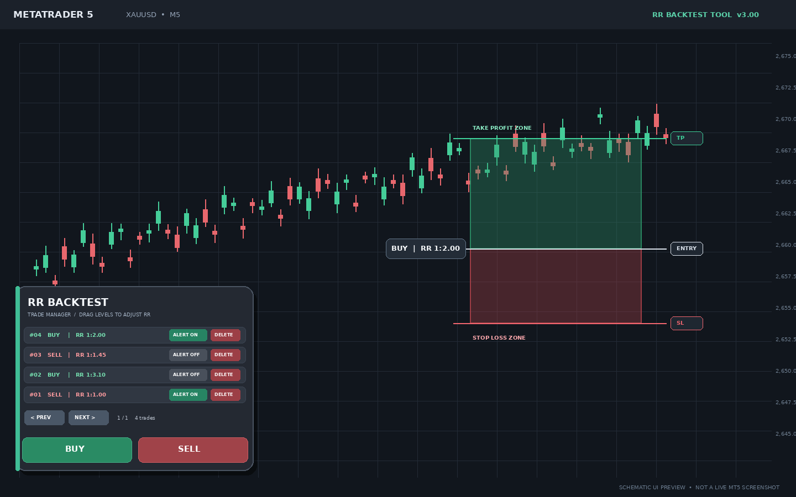

01 نصب در MT5
- فایل ZIP را از حالت فشرده خارج کن.
- در MetaTrader 5 مسیر File → Open Data Folder را باز کن.
- فایل RR_Backtest_Tool.mq5 را در MQL5/Indicators کپی کن.
- در MetaEditor بازش کن، Compile بزن و از Navigator روی چارت اجرا کن.
ابزار رسم سریع ریسکبهریوارد برای بکتست دستی روی نمودار

BUY / SELL ساخت ابزار جدید برای جهت معامله.
ALERT ON / OFF پایش سطح SL یا TP همان معامله.
ALERT HIT هشدار یکبار اجرا شده؛ خاموش و دوباره روشن کن تا مسلح شود.
DELETE حذف ردیف و باکسهای مرتبط با آن.
باکس در مرکز نمای فعلی چارت ایجاد میشود و دامنهی میانگین از کندلهای بستهشدهی قبل از همان کندل مرجع گرفته میشود.
پس RR اولیه برابر 1:1 است. با کشیدن لبههای باکس نسبت دلخواهت را تعیین کن.
اطلاعات روی باکس فقط جهت معامله و RR را در سمت چپ نشان میدهد؛ ارقام پوینت/پیپ روی باکس درج نمیشوند و متن استراتژی در رابط وجود ندارد.
شفافیت ۶۰٪ بهصورت ترکیب بصری رنگ با پسزمینه شبیهسازی میشود، چون Fill مستطیل استاندارد MT5 آلفای واقعی ندارد.
نسخه سورس: 3.00 — سورس از نظر ساختار، نام توابع و توازن آکولادها بررسی شده است. کامپایلر MetaEditor/MT5 در محیط ساخت در دسترس نبود؛ قبل از استفاده، در MetaEditor کامپایل و روی حساب دمو آزمایش کن.